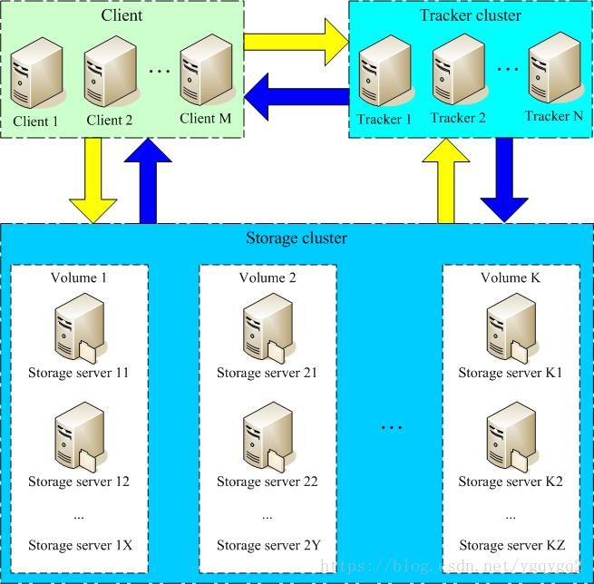
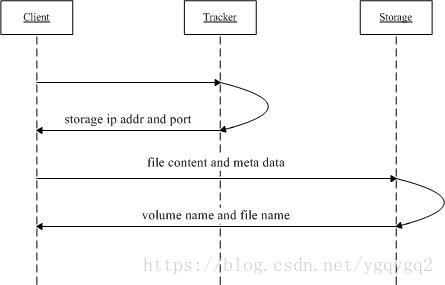
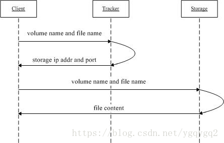

1. FastDFS介绍
FastDFS是一个开源的分布式文件系统，她对文件进行管理，功能包括：文件存储、文件同步、文件访问（文件上传、文件下载）等，解决了大容量存储和负载均衡的问题。特别适合以文件为载体的在线服务，如相册网站、视频网站等等。
FastDFS服务端有两个角色：跟踪器（tracker）和存储节点（storage）。跟踪器主要做调度工作，在访问上起负载均衡的作用。
存储节点存储文件，完成文件管理的所有功能：存储、同步和提供存取接口，FastDFS同时对文件的meta data进行管理。所谓文件的meta data就是文件的相关属性，以键值对（key value pair）方式表示，如：width=1024，其中的key为width，value为1024。文件meta data是文件属性列表，可以包含多个键值对。
FastDFS系统结构如下图所示：

跟踪器和存储节点都可以由一台或多台服务器构成。跟踪器和存储节点中的服务器均可以随时增加或下线而不会影响线上服务。其中跟踪器中的所有服务器都是对等的，可以根据服务器的压力情况随时增加或减少。
为了支持大容量，存储节点（服务器）采用了分卷（或分组）的组织方式。存储系统由一个或多个卷组成，卷与卷之间的文件是相互独立的，所有卷 的文件容量累加就是整个存储系统中的文件容量。一个卷可以由一台或多台存储服务器组成，一个卷下的存储服务器中的文件都是相同的，卷中的多台存储服务器起 到了冗余备份和负载均衡的作用。
在卷中增加服务器时，同步已有的文件由系统自动完成，同步完成后，系统自动将新增服务器切换到线上提供服务。
当存储空间不足或即将耗尽时，可以动态添加卷。只需要增加一台或多台服务器，并将它们配置为一个新的卷，这样就扩大了存储系统的容量。
FastDFS中的文件标识分为两个部分：卷名和文件名，二者缺一不可。

上传文件交互过程：
- client询问tracker上传到的storage，不需要附加参数；
- tracker返回一台可用的storage；
- client直接和storage通讯完成文件上传。

下载文件交互过程：
client询问tracker下载文件的storage，参数为文件标识（卷名和文件名）；
tracker返回一台可用的storage；
client直接和storage通讯完成文件下载。
需要说明的是，client为使用FastDFS服务的调用方，client也应该是一台服务器，它对tracker和storage的调用均为服务器间的调用。
2. FastDFS单机部署
2.1 准备
系统:
CentOS7
安装包:
1 | [root@fastdfs fastdfs5.11]# pwd |
#安装依赖软件
yum install make cmake gcc gcc-c++
1 | ### 2.3 安装libfastcommon |
cd /home/fastdfs5.11/
unzip libfastcommon-1.0.36.zip
mkdir -p usr/local/fastdfs
mv libfastcommon-1.0.36 /usr/local/fastdfs/libfastcommon
cd /usr/local/fastdfs/libfastcommon
./make.sh
./make.sh install
1 | ### 2.4 安装fastdfs |
cd /home/fastdfs5.11/
unzip fastdfs-5.11.zip
mv fastdfs-5.11 /usr/local/fastdfs/
cd /usr/local/fastdfs/fastdfs-5.11
./make.sh
./make.sh install
1 | 安装好之后，在/usr/bin目录下，可以看fdfs开头的命令工具 |
cd /etc/fdfs/
cp tracker.conf.sample tracker.conf
vi tracker.conf
设置tracker的数据文件和日志目录（需手动创建）
base_path=/fastdfs/tracker
设置http端口号
http.server_port=8888
1 |
|
[root@fastdfs ~]# ps -ef | grep tracker
[root@fastdfs ~]# ps -ef | grep fdfs
root 24412 1 0 Jan21 ? 00:00:12 /usr/bin/fdfs_trackerd /etc/fdfs/tracker.conf
root 129129 128507 0 16:39 pts/2 00:00:00 grep –color=auto fdfs
1 | ### 2.6 配置storage |
cd /etc/fdfs/
cp storage.conf.sample storage.conf
vi storage.conf
设置storage的数据和日志文件存储根目录
base_path=/fastdfs/storage
第一个存储目录，第二个存储目录起名为：store_path1=xxx，其它存储目录名依次类推…
store_path0=/fastdfs/storage
存储路径个数，需要和store_path个数匹配
store_path_count=1
tracker服务器IP和端口，有多个则添加多行
tracker_server=192.168.51.36:22122
1 | 使用<font color="#FF00FF">fdfs_storaged /etc/fdfs/storage.conf start</font>尝试启动storage |
[root@fastdfs ~]# ps -ef | grep fdfs
root 24412 1 0 Jan21 ? 00:00:12 /usr/bin/fdfs_trackerd /etc/fdfs/tracker.conf
root 26683 1 0 Jan21 ? 00:00:12 /usr/bin/fdfs_storaged /etc/fdfs/storage.conf
root 129129 128507 0 16:39 pts/2 00:00:00 grep –color=auto fdfs
1 |
|
server_count=1, server_index=0
tracker server is 192.168.51.36:22122
group count: 1
Group 1:
group name = group1
disk total space = 97228 MB
disk free space = 90266 MB
trunk free space = 0 MB
storage server count = 1
active server count = 1
storage server port = 23000
storage HTTP port = 8888
store path count = 1
subdir count per path = 256
current write server index = 0
current trunk file id = 0
Storage 1:
id = 192.168.51.36
ip_addr = 192.168.51.36 (fastdfs) ACTIVE
1 | ### 2.7 在storage上安装nginx |
cd /home/fastdfs5.11/
unzip fastdfs-nginx-module-master.zip
mv fastdfs-nginx-module-master /usr/local/src/
tar -zxvf nginx-1.10.3.tar.gz
cd nginx-1.10.3
./configure –prefix=/usr/local/nginx –add-module=/usr/local/src/fastdfs-nginx-module-master/src/
make && make install
1 | 如下结果则表示安装成功 |
[root@fastdfs fastdfs-nginx-module-master]# /usr/local/nginx/sbin/nginx -V
nginx version: nginx/1.10.3
built by gcc 4.8.5 20150623 (Red Hat 4.8.5-36) (GCC)
configure arguments: –prefix=/usr/local/nginx –add-module=/usr/local/src/fastdfs-nginx-module-master/src
1 | ### 2.8 配置client |
cd /etc/fdfs/
cp client.conf.sample client.conf
vi client.conf
#数据和日志文件存储根目录
base_path=/fastdfs/tracker
tracker_server=192.168.51.36:22122
http.tracker_server_port=8888
1 | ``` |
2.9 配置fastdfs-nginx-module和nginx
1 | cp /usr/local/src/fastdfs-nginx-module-master/src/mod_fastdfs.conf /etc/fdfs/ |
nginx.conf配置vhost
1 | cd /home/fastdfs5.11/conf/ |
配置storage.conf
1 | vi /usr/local/nginx/conf/vhost/storage.conf |
启动nginx:
1 | /usr/local/nginx/sbin/nginx |
2.10 关闭selinux、firewalld
1 | vi /etc/selinux/config |
拼接上面文件中生成的字符串，进行url访问：
1 | http://192.168.51.36:8888/group1/M00/00/00/wKgzJFxG4LaAH8UHAAL3GebUIgk668.png |
后续有时间写一个一键安装FastDFS和配置的脚本。